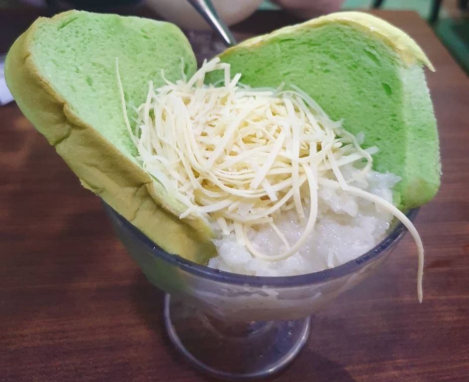

Wisata Rekreasi & Kuliner Unggulan Kota Depok
Aladin Waterboom

Salah satu waterpark terbesar di kota Depok yang sering juga dikenal dengan Aladin Waterpark. Dengan harga tiket Depok Fantasi Waterpark yang masih terjangkau sudah bisa bermain di berbagai wahana seru.
Selengkapnya
Selengkapnya
Sop Duren Margonda

Buka sejak 2010, Sop Duren Margando selalu ramai pembeli. Dulu tempat berjualannya terbilang kecil tanpa area bersantap. Tapi kini pengunjung bisa menikmati sop duren di tempat.
Selengkapnya
Selengkapnya
Kampung 99

Dalam tempat wisata ini tersedia tour keliling Kampung 99 Pepohonan yang biasanya dimulai dari jam 10 dan selesai saat jam makan siang. Untuk pengunjung dapat menanam pohon guna melestarikan alam kota Depok dengan biaya Rp.25.000 per-pohonnya.
Selengkapnya
Selengkapnya